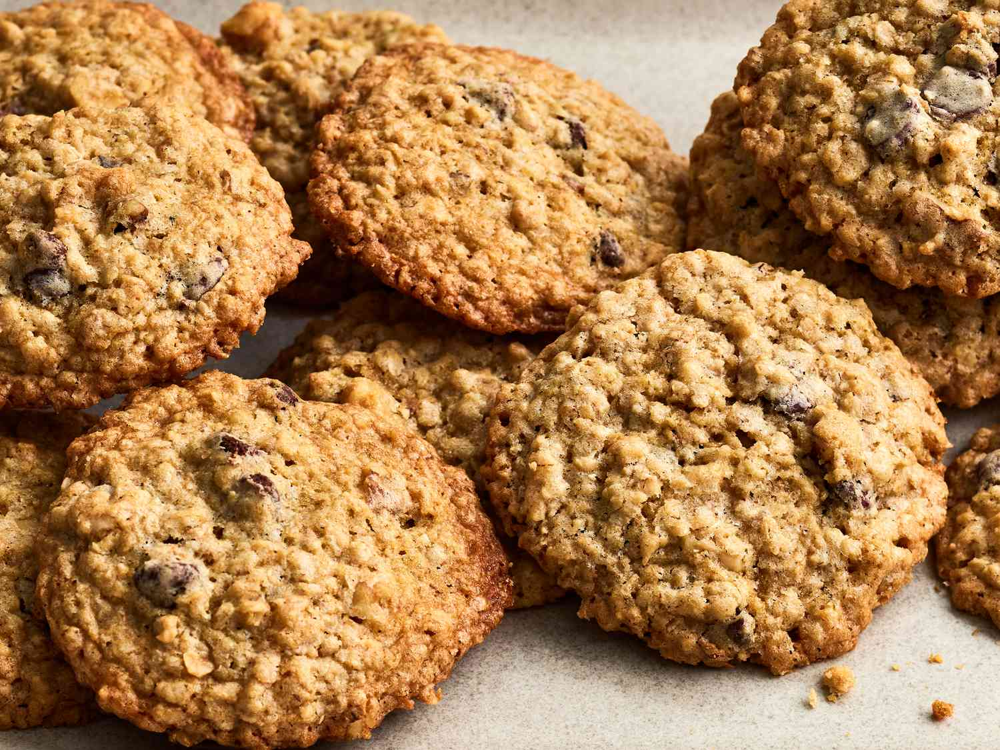

How to Make Oatmeal Chocolate Chip Cookies
About Oatmeal Chocolate Chip Cookies
This recipe makes very delicious oatmeal chocolate chip cookies. These cookies are very chewy and soft. This is a very simple recipe to make and does not take that long to make. I love to eat then because they are super chewy, and I love how there is a lot of chocolate in the cookies. These cookies make an excellent snack if you ever need some sugar in your day!

Ingredients
- ½ cup sifted flour
- ½ cup softened butter
- ½ teaspoon baking power
- ¼ teaspoon salt
- 1 ½ tablespoon white sugar
- ⅓ cup packed brown sugar
- One egg
- 1 teaspoon vanilla
- 1 ⅓ cup quick oats
- ½ cup chocolate chips
Instructions
- Adjust the oven rack to the middle position. Preheat the oven to 350°F.
- Sift then measure the flour. Then sift the baking powder and salt together into a small bowl.
- Cream the butter in a medium size bowl using the back of a wooden spoon.
- Add the brown and white sugar in gradually. Cream the butter and sugar together until it is light and fluffy.
- Beat in the egg and vanilla.
- Gradually add the dry ingredients into the creamed mixture. Mix until combined.
- Stir in the oats and chocolate chips.
- Using two spoons, portions the dough and place them on a lined cookie sheet. Keep the cookies about 5 cm apart.
- Bake the cookies for about 10 minutes or until they are golden brown around the edges.
- Let the cookies stand for about 10 minutes on a cookie sheet.
- Enjoy the cookies!